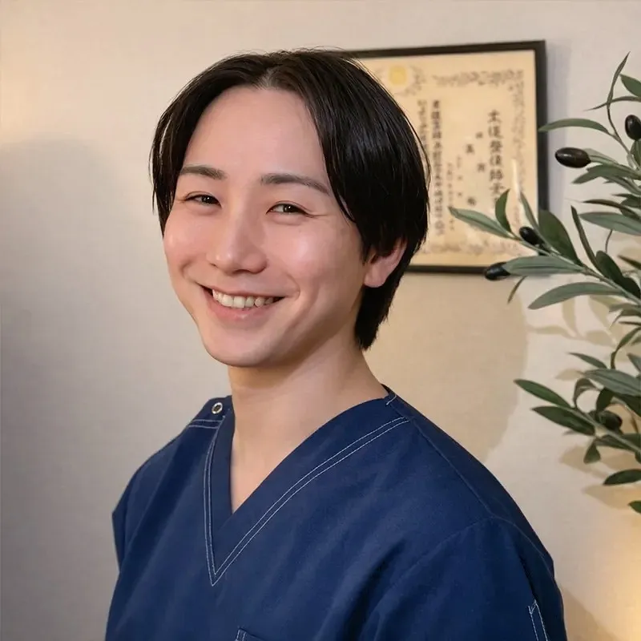

原因のはっきりしない不調に悩む方へ。
自律神経の乱れを、身体全体のバランスから整えます。

慢性的な不調は、見た目には分かりにくく、 周囲にも理解されにくいことがあります。 だからこそ私は、 症状だけを見るのではなく、 身体全体の状態とその背景を丁寧に確認しながら、 安心して通える施術を大切にしています。
CONDITION CHECK
現在の不調が、
睡眠・ストレス・胃腸・呼吸など、
どの負担と重なりやすいかを
無料・登録なしで簡易的に確認できます。
来院時には82項目の詳細チェックを行い、
現在の状態をより詳しく確認できます。
自律神経は、呼吸・循環・消化・体温調整・睡眠など、生命活動の基盤を担う調整機能です。 強いストレスや生活リズムの乱れが続くと、 交感神経と副交感神経の切り替えがうまくいかなくなり、局所的な症状として現れることがあります。 皮膚症状、不眠、めまい、動悸、慢性的な疲労。 これらは単独の問題ではなく、 身体全体の調整機能の乱れとして捉える必要があります。 部分的な対処ではなく、 神経系・呼吸・筋緊張・循環の連動を整える。 その視点から施術を組み立てています。

当院では、強い刺激や矯正を主とする方法は行っていません。 自律神経のバランスは、過度な刺激によって一時的に変化しても、身体が防御反応を起こせば元に戻ってしまうことがあります。 重要なのは、 「今の身体にとって適切な刺激量」を見極めることです。 筋緊張の状態、呼吸の深さ、皮膚の緊張度、脈の反応などを確認しながら、 神経系に過負荷をかけない範囲で調整を行います。 その結果として、 徐々に身体が本来の調整機能を取り戻していくことを目指します。
当院では、不調のある部分だけではなく、 現在のお身体の状態を丁寧に確認しながら、 身体全体のバランスを整えていきます。 そのため、以下のようなお考えの場合は、 ご期待に添えないことがあります。
まずは現在の状態を確認したい方は、 当院オリジナルの自律神経チェックもご利用ください。
CONDITION CHECK
現在の不調が、睡眠・ストレス・胃腸・呼吸など、 どの負担と重なりやすいかを無料・登録なしで簡易的に確認できます。 来院時には82項目の詳細チェックを行い、 現在の状態をより詳しく確認できます。
はじめまして。 大阪 自律神経専門整体院 gene（ジーン）の高田裕基と申します。 私は国家資格である柔道整復師として、関東・大阪に複数店舗を展開する自律神経調整に特化した整骨院グループに8年間在籍し、院長として新人教育・技術指導・院の運営に携わってきました。 アトピー性皮膚炎・めまい・耳鳴り・不眠・パニック症状など、自律神経の乱れから生じるさまざまなお悩みと向き合ってきました。 多くの方が、 「何を信じていいかわからない」 「検査では異常がないのに良くならない」 「周囲に理解してもらえない」 と、不安を抱えながら日常を過ごされています。 その方々の状態が少しずつ変わっていく中で、 「先生に診てもらえてよかった」 「もっと早く来ればよかった」 という言葉をいただくたびに、この仕事の意義と責任を強く感じてきました。 私自身、家族が長年アトピーに悩んでいたこともあり、体質や自律神経の乱れによる不調を身近に感じてきました。 だからこそ当院では、 「本質＝gene」 を理解し、 「遺伝子＝gene」 レベルで体質を整え、 「根本＝gene」 から再発しない身体へ導く という考えを軸に施術を行っています。
初めての来院は不安があって当然です。 「病院では異常がないと言われた」 「どこに相談すればいいか分からない」 そのような方こそ、一度ご相談ください。 身体の状態を丁寧に確認し、 今何が起きているのかを一緒に整理していきます。 初めての整体は不安もあると思いますが、 無理な施術や通院の強制は一切ありませんのでご安心ください。
初めての方が不安に感じやすい内容を、先にまとめています。
A. 無理な矯正や強い刺激は行っておりません。お身体の反応を確認しながら、負担の少ない範囲で調整します。
A. 状態や経過によって異なります。初回時にお身体の状態を確認したうえで、現実的な見通しをお伝えしています。
A. 当院は自費施術のみとなります。自律神経の乱れに関わる不調を、身体全体の状態から確認していきます。
専門性を追求する一方で、 私が最も大切にしているのは“安心感”です。 理論があっても、 安心できる空間でなければ身体は緩みません。 無理な通院の提案はしません。 必要以上に不安をあおることもありません。 現在の状態を正直に共有し、 現実的な見通しをお伝えします。